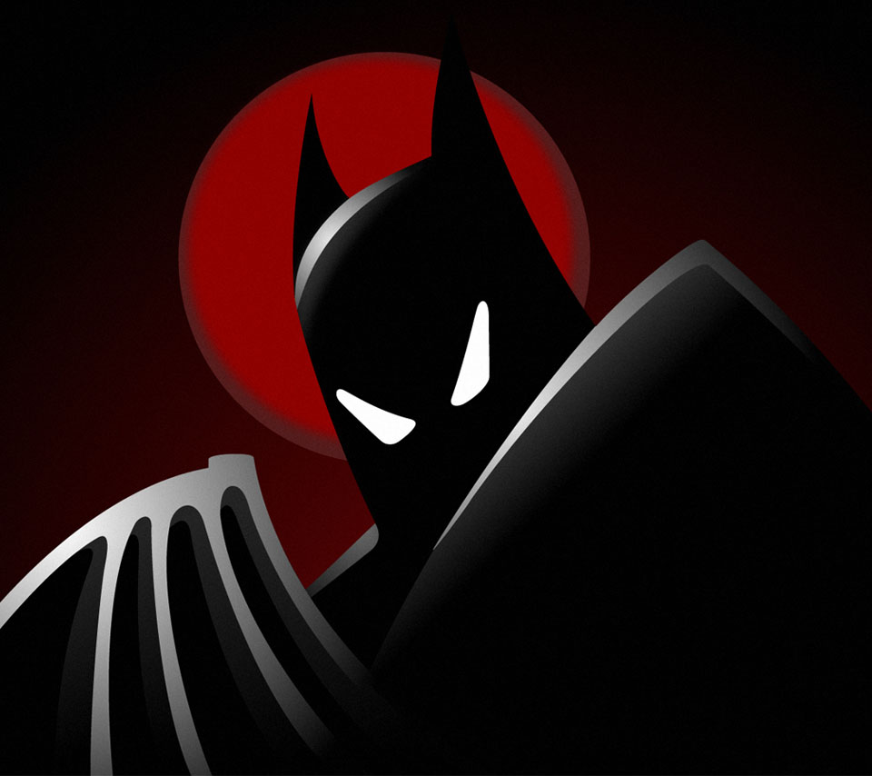

- La atmósfera oscura y madura que establece el tono para el personaje de Batman. 
-
Los villanos memorables, especialmente el diseño y desarrollo de personajes como Mr. Freeze y Two-Face.

-
La creación de Harley Quinn, uno de los personajes más populares del universo de Batman.

- Una historia que puede ser disfrutada tanto por niños como por adultos, con temas profundos y oscuros.